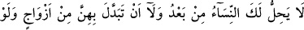
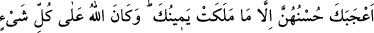
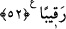
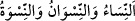
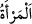
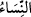

muâmele yapmıştır. Çünkü Allah kalblerde ve göğüslerde olanı bilir ve işleri her
yönden kuşatır. O’ndan bizi rızâsına muvaffak kılmasını ve atâsına/ihsânına vesîle
lütfetmesini niyaz ederiz. Her nebî ve velîye bol bol veren/feyiz ihsân eden, gizli ve
âşikar her işte yol gösteren (mürşid) O’dur.
52. Bundan sonra artık başka kadınlarla evlenmen, elinin altında bulunan
cariyeler hariç, güzellikleri hoşuna gitse bile, bunların yerine başka hanımlar alman
sana helâl değildir. Allah her şeyi gözetler.
“Bundan sonra” yâni ümmetinin en fazla evlenebileceği kadın sayısı dört olduğu gibi
senin de eşlerinin en fazla sayısı bu olduğu için, kendilerini dünyâ ile âhiret arasında
tercih yapmaları için serbest bıraktığın ve seni tercih eden dokuz hanımından sonra ya
da hanımlarından birisi ölecek olsa bile bugünden sonra “artık başka kadınlarla”
müslüman veya ehl-i kitaptan kadınlardan birisiyle “evlenmen,” helâl değildir.
“
” kelimeleri, “
” kelimesinin kendi lafzından olmayan
çoğullarıdır. (“
” kelimesine cins anlamı verilmiştir.) Çünkü Harf-i ta‘rif, cemî/çoğul
bir kelimenin başına geldiği zaman çoğul mânâsı ortadan kalkar ve o kelime ile cins
murâd edilir. Bu kelime nekre gibi olup müsbette özel, menfide ise genel mânâ ifade
eder. Mesela bir kişi kadınlarla evlenmeyeceğine, insanlarla konuşmayacağına, köleler
satın almayacağına yemin etse, bir kadınla evlense, bir insanla konuşsa ve bir köle satın
alsa da yeminini bozmuş olur. Çünkü cins ismi burada gerçek anlamındadır.
Dört kadından fazlasıyla evlenmek ümmete haram olmuş, fakat Hz. Peygamber (s.a.)’e
ise haram olmamıştır. Çünkü Hz. Peygamber (a.s.) nübüvvet ve risâletin koruma ve
muhâfazasındadır. Başkasının muktedir olamadığı nice şeylere muktedir olur. Bu mânâ
sebebiyle Allah ümmetine farz kılmadığı nice şeyleri O’na farz kılmıştır. İşte gece
kalkıp ibâdet etmesi, nâfile bir ibâdet yaptığı zaman ona devam etmesinin vâcib olması
ve diğerleri bu kabildendir.
Ümmetin fertlerinde evliliğin en fazla dörtle sınırlanmasının sırrı ise mertebelerin
sayısı dört olduğu içindir. Bunlar mânâ mertebesi, ruh mertebesi, misal mertebesi ve his
mertebesidir. İnsanın elde ettiği varlık; gaybî isimler, ilmî hakîkatler nûrî ruhlar, misâlî
sûretler, ulvî, süflî ve tevlîdî suretlerin toplamından hâsıl olmuştur. İşte bu yüzden
kişiye dört evlilik meşrû kılınmıştır. Bu konunun tamamı, (Konevî’nin Miftâhu’l-gayb
ve Tefsîru’l-Fâtiha ve Atpazârî Osman Fazlî Efendi tarafından bu eserlere şerhleri